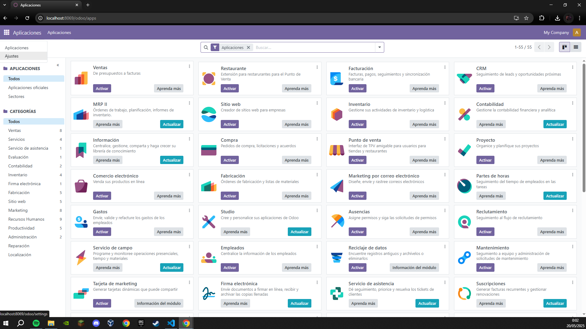
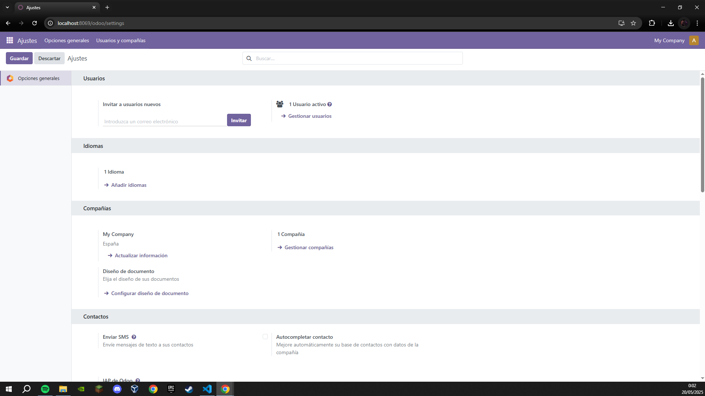
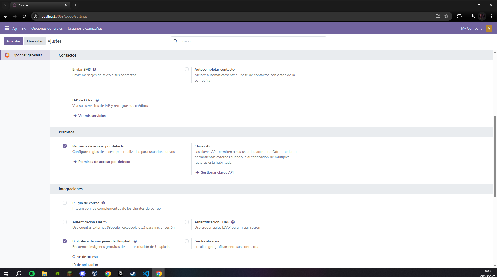
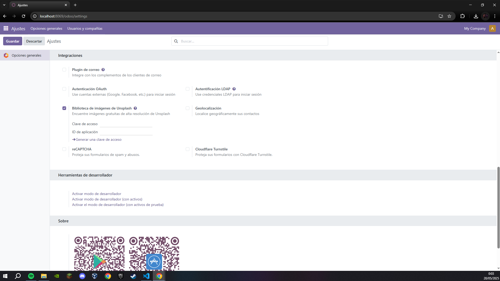
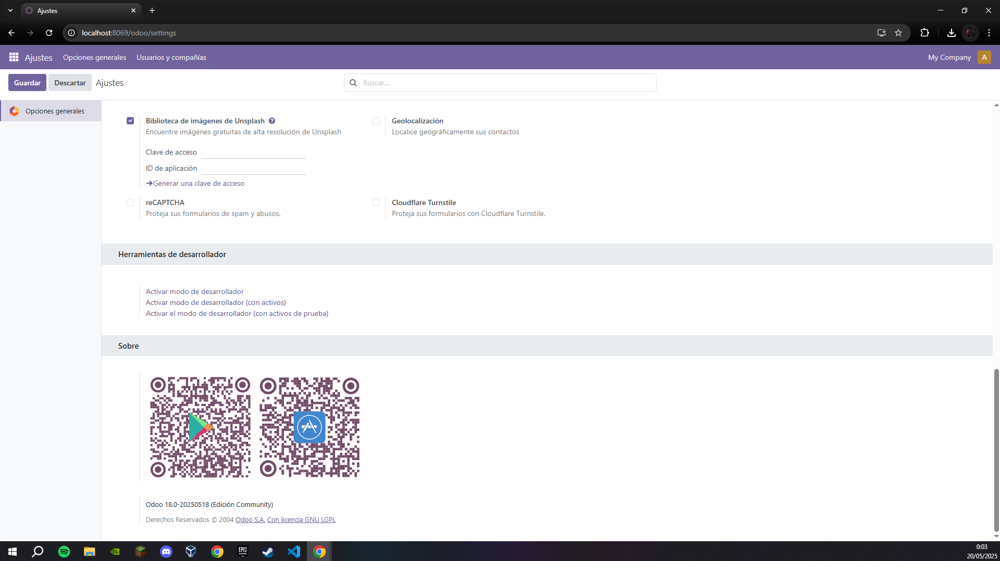

Administración y configuración
En esta sección vamos a explicar la configuracion que tiene el sistema Odoo
Pasos a seguir:
Una vez tengamos instalado nuestro SGE Odoo, arriba a la izquierda, al lado de la palabra aplicaciones vamos a encontrar un cuadrado conformado por min cuadraditos donde al hacerle click nos mostrara los ajustes y al darle click nos llevara a la parte de ajustes generales
   
Podemos observar que se toman en serio lo de "Generales"
Estas opciones nos permiten tocar todo de nuestro SGE Odoo de manera rapida y como bien dice, general
Usuarios:
- Puedes invitar a nuevos usuarios al sistema ingresando su correo electrónico.
- También puedes gestionar los usuarios activos, modificando permisos o eliminando accesos según sea necesario.
Idiomas:
- Si necesitas trabajar en varios idiomas, puedes agregar nuevos idiomas al sistema para adaptarlo a las necesidades de tu equipo o clientes.
Compañias:
- Puedes actualizar la información de tu empresa, asegurando que los datos sean correctos.
- Además, puedes configurar el diseño de los documentos oficiales para personalizarlos según tu marca.
Contactos
- Existe la opción de enviar SMS directamente a los contactos registrados en tu base de datos.
- También puedes autocompletar la información de los contactos con datos de la empresa, lo que facilita la gestión y mejora la precisión.
Permisos
- Permisos de acceso por defecto: Define reglas de acceso personalizadas para nuevos usuarios.
- Claves API: Permite a los usuarios conectarse a Odoo desde herramientas externas, especialmente con autenticación multifactor.
Integraciones:
- Plugin de correo: Conecta Odoo con clientes de correo electrónico.
- Autenticación OAuth: Permite a los usuarios iniciar sesión con cuentas externas (Google, Facebook...).
- Biblioteca de imágenes de Unsplash: Accede a imágenes gratuitas en alta resolución desde Unsplash.
- Autenticación LDAP: Facilita el acceso mediante credenciales LDAP.
- Geolocalización: Ubica geográficamente a los contactos.
Sobre:
Esto es simplemete un QR que nos lleva a la tienda de aplicaciones de nuestro telefono Android o Iphone para que descarguemos Odoo para dispositivos moviles